class: center, middle count: false <!-- background-image: url(https://www.europeanfiles.eu/wp-content/uploads/2018/09/AI-copie-800x444.jpg) --> background-image: url(img/IMG_20210623_182329.jpg) background-size:cover; <h1 style="color:black;margin-top: 10pt;font-size: 48pt;" > Exposure modelling using object detection and volunteered geographic information </h1> <!---span style="line-height: 280pt;"></span !---> <h3 style="color: orangered;text-align: center;line-height: 30pt;font-size: 24pt ;margin-top: 40%;"> Pavia <br> 16th March 2022 </div> --- <img src="https://www.europeanfiles.eu/wp-content/uploads/2018/09/AI-copie-800x444.jpg" class="fish1"> -- <img src="https://www.mdpi.com/sensors/sensors-19-03014/article_deploy/html/images/sensors-19-03014-g005.png" style="width:420px;height:204px;" class="fish2"> -- 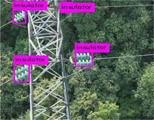 -- 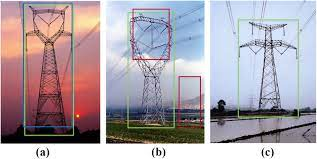 --- # Agenda <ul style="line-height:40pt"> <li>Volunteered geographic information and user-generated content</li> <li>Risk recap</li> <li>Deep learning recap</li> <li>My Phd recap</li> <li>Why I'm talking about transmission towers</li> <li>Me talking about transmission towers</li> <li>The end</li> </ul> --- # Volunteered Geographic Information (VGI) <center style="font-size:36px;">"_...user-generated geospatial content..._"</center> <br> <span style="margin-left:75%;">Goodchild (2007)</span> -- <div style="margin-top: 20pt;"> .cols[ .unquarto[ **Examples** - OpenStreetMap - Flickr - Google Earth and Street View ] .trequarti[ 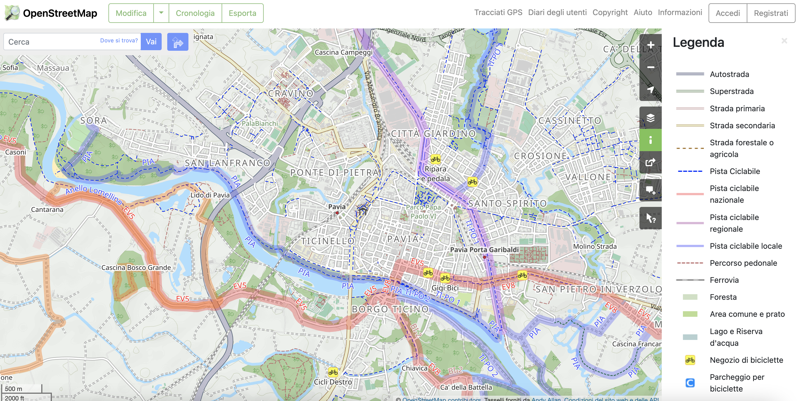 ] ] </div> <p style="text-align: center;"> All social network related data fall into the UGC category </p> --- # Risk Analysis .cols[ .fifty[ 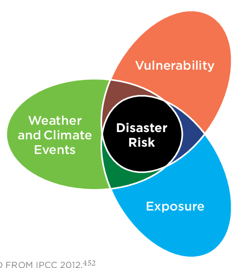 ] .fifty[ <ul style="line-height:20pt"> <li><span style="font-weight:600;color:green">Hazard</span>: defined as the potential occurrence of a natural or human-induced physical event.</li> </ul> ] ] --- # Risk Analysis .cols[ .fifty[ ] .fifty[ <ul style="line-height:20pt"> <li><span style="font-weight:600;color:green">Hazard</span>: defined as the potential occurrence of a natural or human-induced physical event.</li> <br> <li><span style="font-weight:600;color:indianred">Vulnerability</span>: defined as the propensity or predisposition to be adversely affected by an hazard.</li> </ul> ] ] --- # Risk Analysis .cols[ .fifty[ ] .fifty[ <ul style="line-height:20pt"> <li><span style="font-weight:600;color:green">Hazard</span>: defined as the potential occurrence of a natural or human-induced physical event.</li> <br> <li><span style="font-weight:600;color:indianred">Vulnerability</span>: defined as the propensity or predisposition to be adversely affected by an hazard.</li> <br> <li> <span style="font-weight:600;color:dodgerblue">Exposure</span>: defined as the presence of people; livelihoods; species or ecosystems; environmental functions, services and resources; infrastructure; or economic, social or cultural assets in places and settings that could be adversely affected</li> </ul> ] ] --- # Exposure modelling * For large areas, the general approach requires disaggregating to fine resolution coarse resolution data. + Population data + GDP data + Land use area + Road Density * In smaller areas, exposure information come from different sources that are not really easy to control. __Example of special case__ + NEWFRAME --- count: false # Exposure modelling * For large areas, the general approach requires disaggregating to fine resolution coarse resolution data. + Population data + GDP data + Land use area + Road Density * In smaller areas, exposure information come from different sources that are not really easy to control. __Example of special case__ + NEWFRAME <div align="center" style="border-style: solid;border-color: dodgerblue;padding: 30pt,0,30,0;"> VGI and UGC bridge the gap between the two resolution </div> --- # Deep Learning and Computer Vision <!-- video tracking, image restoration, motion estimation --> <p class="aligncenter"> 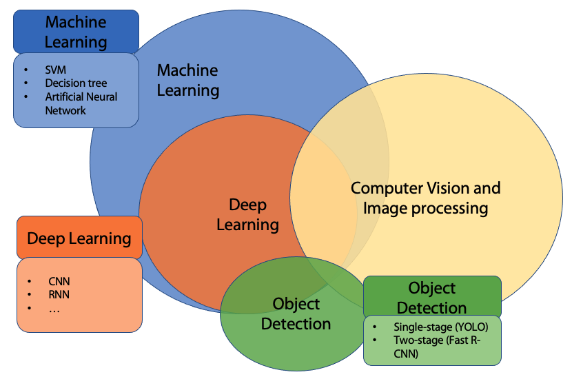 </p> --- # Object Detection **Definitions much??** <img src="img/types.png" alt="idVSclsVSseg" style="width:100%;height:100%;"> Objected detection is defined as the task of predicting the location of on object in an image along with the class associated to the object --- # My Phd 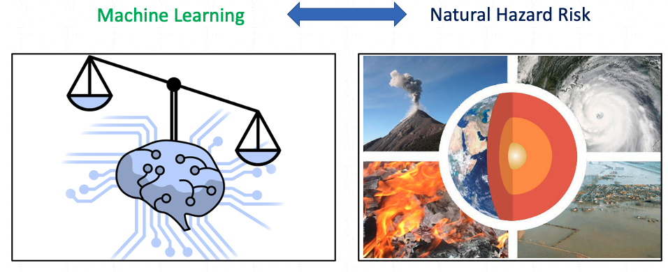 --- # My Phd <img src="http://www.iusspavia.it/documents/20181/126278/Cesarini+-+dottorando/ecf02222-e974-4eff-8d70-866cff9866ea?t=1573128731000" alt="myml" style="width:150px;height:150px;border-style:solid ;border-radius: 50%;border-color: green;border-width: 3pt;" class="myface"> --- # How I see (saw) ML 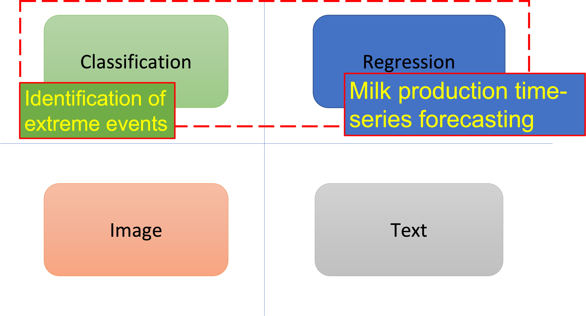 --- # Motivation ## Exposure modelling using object detection and volunteered geographic information The main reason was that I wanted to work with images and object detection Still, transmission towers are vulnerable assets to several hazards like: - Strong winds - Earthquake - Ice loads Finally, the combination of VGI, street-level imagery and DL models is rare. --- # The methodology An automated start-to-end pipeline that returns relevant features of towers 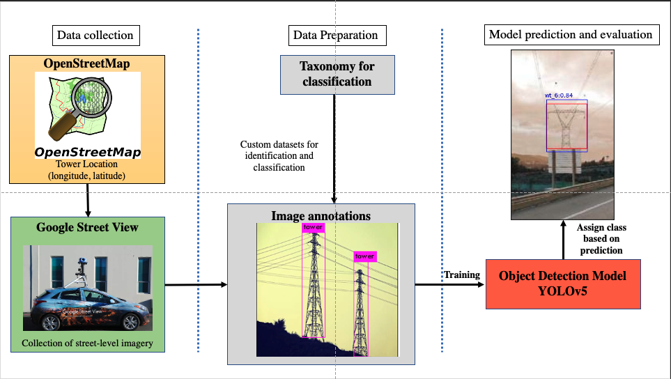 --- # OpenStreetMap 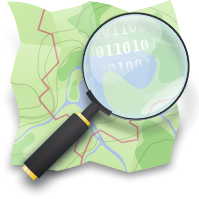 The power-grid layer of OSM contains 14 millions tower. The feature all towers have are: <li>id</li> <li>longitude and latitude</li> There are several methods to [download the data](https://wiki.openstreetmap.org/wiki/Downloading_data) I've used the [Overpass API](https://wiki.openstreetmap.org/wiki/Overpass_API) that as reported in the wiki: <center>"One can download all data in some small area or make more advanced filtering."</center> -- 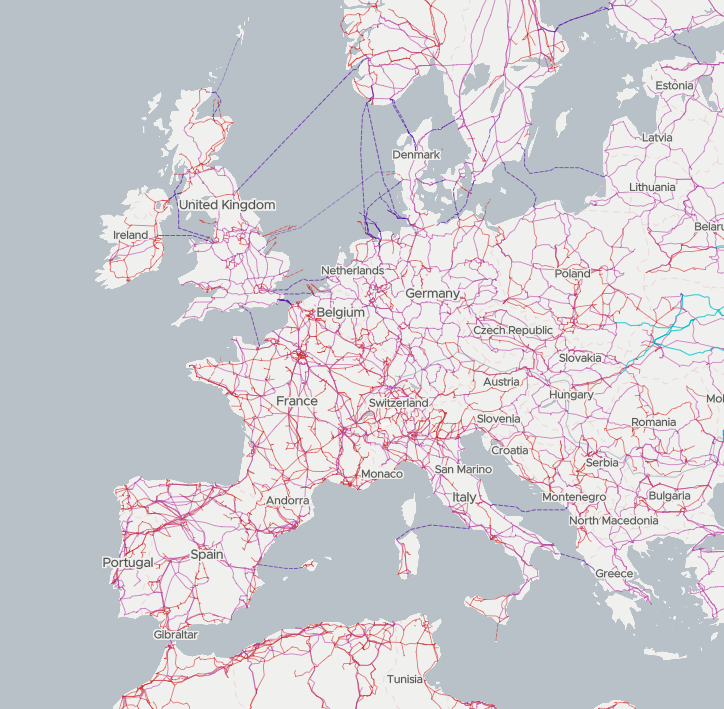 <!-- <img src="https://wiki.openstreetmap.org/w/images/thumb/b/b5/Overpass_API_logo.svg/400px-Overpass_API_logo.svg.png" class="center"> --> --- # Google Street View __The source of street-level imagery in my case__ - Wonderful and easy to use (kind of) API 😍 -- - But Mama Google still wants to get paid 💰 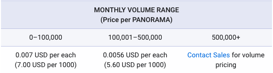 --- count: false # Google Street View __The source of street-level imagery in my case__ - Wonderful and easy to use (kind of) API 😍 - But Mama Google still wants to get paid 💰 - For example France has around 700k towers (iirc) 🤔 -- Which means ~ 2800€ assuming a 4$ price above 500k images -- - Google is kind enough to provide 200$ of credit each month <p style="text-align:center;text-decoration: underline;"> 2800 / 200 = 14 months 😭 </p> --- # Study area Around 6k towers and multiple POV <iframe src="MapStudyArea.html" style="width:100%; height:480px;" ></iframe> --- # Development of the taxonomy and training of the model 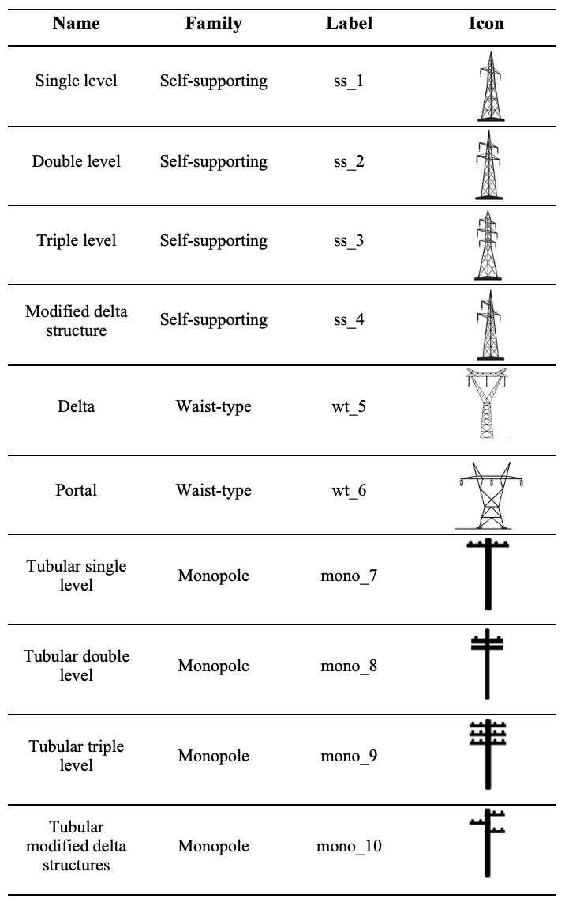 .fifty[ <p style="font-family: sans-serif;"> <center> <a style="font-weight: 600;">Two tasks</a> <br> <li> Identification </li> <li> Classification </li> </center> </p> 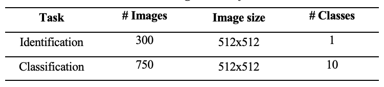 <img src="https://miro.medium.com/max/1400/1*xVMw-joK4JGtzXfSPcTQaw.png" align="right" width="50%"style="margin-top: 10pt;" > ] --- # Some results (1) 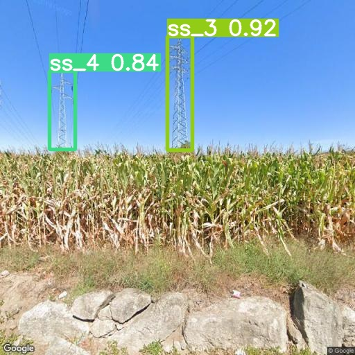 <p style="position:absolute;left: 500px;top: 100px;"> <span style="font-weight:700;">Mean Average Precision</span> <br> Identification: 84% <br> Classification: 51% </p> 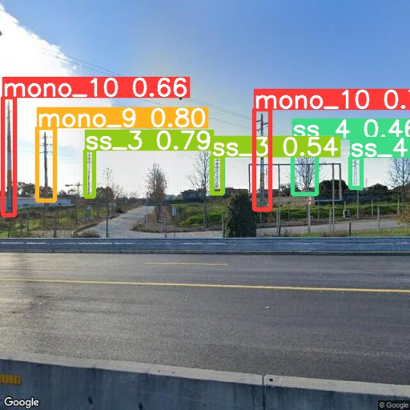 --- # Some results (2) 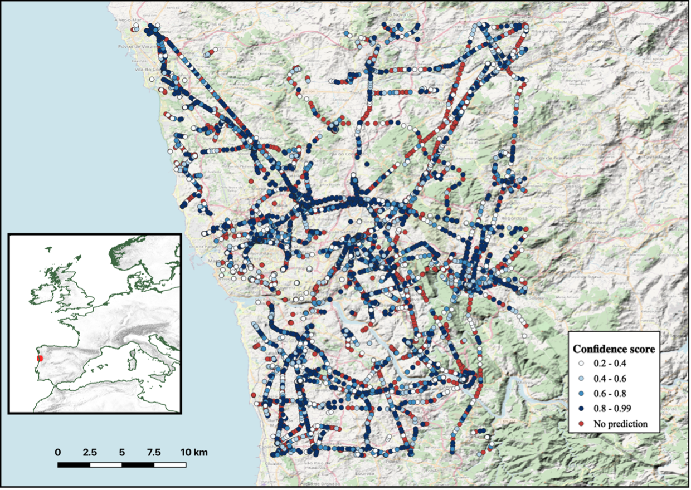 --- # Considerations/Limitations ### Case-study related and more general <ul style="line-height:30pt"> <li style='font-weight: bold;color: darkseagreen;'>Fun</li> <li>Access to a huge amount of data</li> <li>GSV costs and hogging of information</li> <li>Hard to find training images</li> <li>Obstacles in the built environment</li> <li>Hard to find training images</li> <li>Time consuming annotation of image (automation through supervised algorithm)</li> <li>Object agnostic methodology</li> </ul> --- # Topics I haven't touched <ul style="line-height:30pt"> <li>How a neural network trains</li> <li>Single stage and Two-stage detectors</li> <li>Architecture of the neural network</li> <li>Evaluation metrics</li> <ul> <li>Intersection over union</li> <li>AP, AR</li> <li>Small object, big object</li> </ul> <li>Extraction of height from an image</li> <li>Photogrammetry</li> <li>Depth map for height</li> </ul>